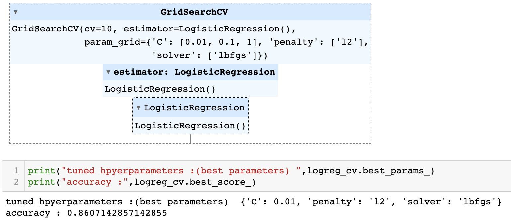
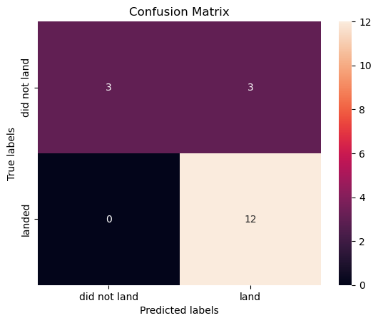
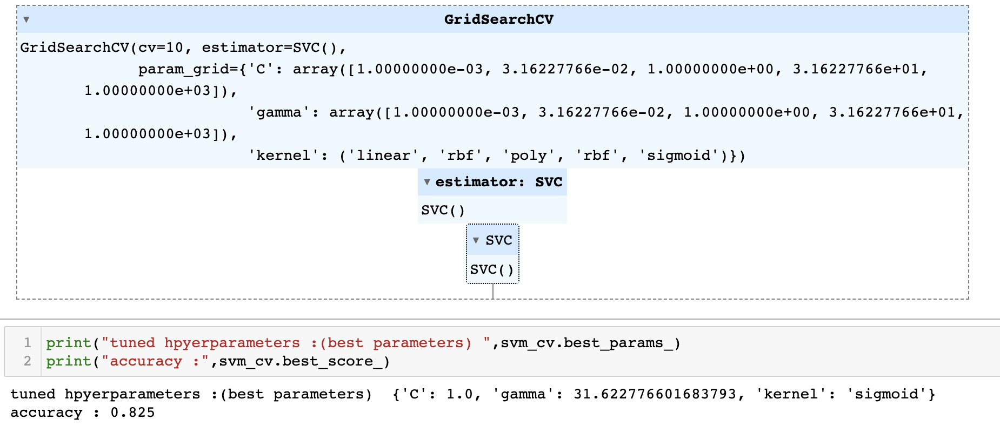
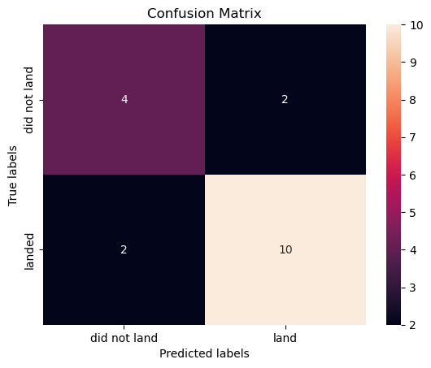
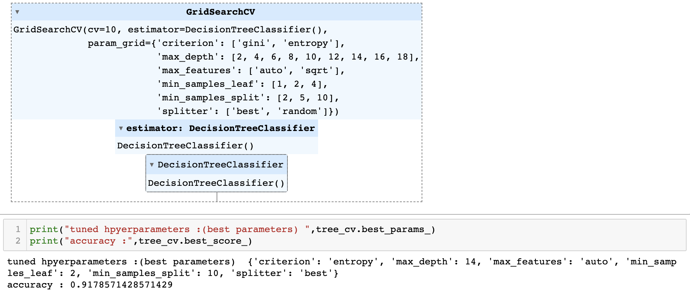
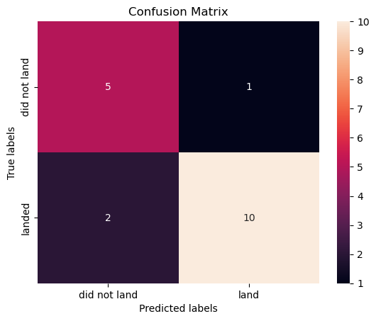
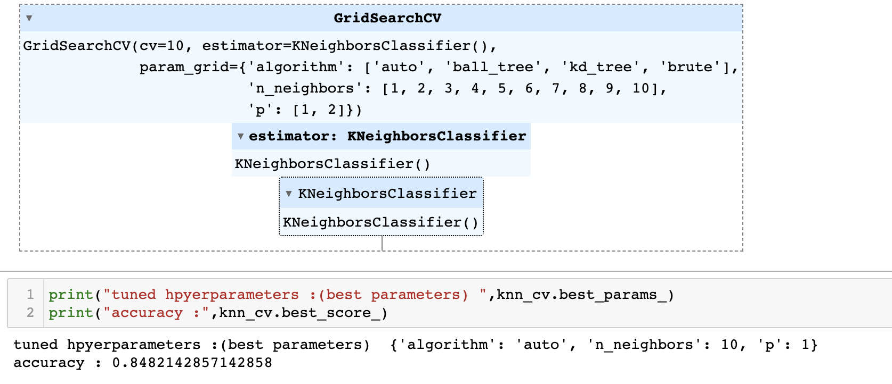
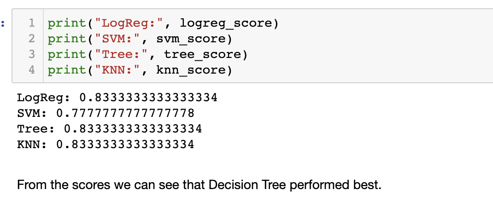

Executive Summary
- Background: SpaceX is recognized for its vision of frequent space travel and Mars colonization, leveraging the Falcon 9 rocket with a reusable first stage.
- Objective: The main thrust of the analysis was predicting the Falcon 9 first stage's successful landing, a pivotal factor in cost-saving and enhancing space mission frequency.
- Data Source: Data was extracted from the SpaceX API, encompassing details like rocket type, launch site, payload specifics, and landing outcomes.
- Data Handling: The data underwent cleaning, missing value treatment, and feature transformation for analytical readiness.
-
Insights from EDA:
- A clear correlation was identified between Flight Number and increased Landing Success. Meaning SpaceX increased their success of landing the first stage rocket over the years.
- Heavy payloads seemed to have a higher likelihood of successful landing.
- Post-2013, there's an evident trend of increased launch success rate.
- Following orbit targets have the highest success rate of first stage rocket landing: ES-L1, GEO, HEO, and SSO.
- Machine Learning Analysis: Multiple models, including Logistic Regression, SVM, Decision Tree, and KNN, were deployed. The Decision Tree surfaced as the most accurate model.
- Key Findings: Launch site, the age of the booster (Flight Number), and payload mass emerged as influential factors in landing success.
Technologies Used
- Python: The primary programming language used for data collection, wrangling, analysis, and machine learning model development.
- Pandas: A Python library used for data manipulation and analysis. It provided tools for shaping, merging, and summarizing data.
- NumPy: Used for numerical operations and handling arrays.
- Scikit-Learn: A machine learning library in Python. It was utilized for data preprocessing, training machine learning models, and evaluating their performance.
- Seaborn & Matplotlib: Python visualization libraries used for plotting graphs, visual exploratory data analysis, and visualizing model results.
- SpaceX API: Used for fetching the Falcon 9 launch data. It provided detailed information about each launch.
- SQLAlchemy: A SQL toolkit and Object-Relational Mapping (ORM) library for Python. It was used for creating a database connection.
- SQLite & PostgreSQL: Databases used for storing and retrieving the SpaceX Falcon 9 launch data.
- Plotly: An interactive graphing library for making visually appealing plots in Python.
- Dash: A Python framework for building analytical web applications, often used in tandem with Plotly for dynamic visualizations.
- GridSearchCV: A method from Scikit-learn used for hyperparameter tuning, ensuring optimal parameters for the machine learning models.
- Jupyter Notebook: An open-source web application that was used to create and share documents containing live code, equations, visualizations, and narrative text.
Objective
The main goal of this analysis is to predict the success of the Falcon 9 first stage landing. A successful landing means cost-saving for space missions and paves the way for more frequent and cost-effective space travel.
Methodology
Data Collection:Acquired data from the SpaceX API. This data contained details about various aspects of each launch, such as rocket type, payload, launch site, and landing success.
Data WranglingCleaned the data, handled missing values, and converted features into a usable format.
Feature Engineering:Extracted and one-hot encoded relevant features like Launch Site, Orbit, Flight Number, Payload Mass, etc.
Model Development:Trained various machine learning models including Logistic Regression, Support Vector Machine, Decision Tree, and K-Nearest Neighbors using the training dataset.
Model Evaluation:Used accuracy as a metric to evaluate the performance of models on the test dataset. Also visualized the confusion matrix for each model.
Results
Exploratory Data Analysis:
- Observed a positive relationship between Flight Number and Landing Success.
- Payload Mass also seemed to influence Landing Success.
- Certain launch sites like VAFB-SLC had no launches for heavy payloads.
- Different orbit targets have differrent success rates.
- The success rate of launches has been generally increasing since 2013.
Machine Learning Model Performance
-
Logistic Regression: Provided good classification results with some false positives.
 -
Support Vector Machine: Delivered relatively good results with challenges in handling false positives and false negatives.
 -
Decision Tree: Achieved the best performance among all models with high accuracy.
 -
K-Nearest Neighbors: Provided good classification results with some false positives.

-
Final Result:

Conclusion
The analysis provides valuable insights into the factors that might influence the successful landing of Falcon 9's first stage. The Decision Tree model outperformed other models in predicting the landing success, making it the recommended model for future predictions. However, while the model provides good predictions, it is essential to note that external factors not included in the dataset can also play a role in landing success. Continuous data collection and model refinement are recommended as SpaceX continues its future launches.
This analysis aids in understanding the reliability of the Falcon 9's first stage landing, a crucial step towards SpaceX's goal of making space missions more frequent and affordable.